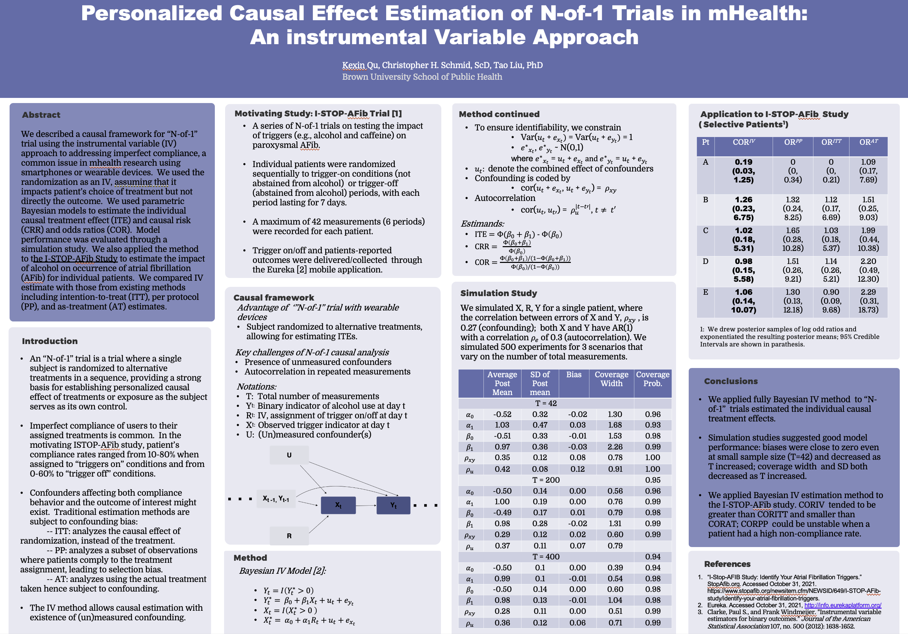
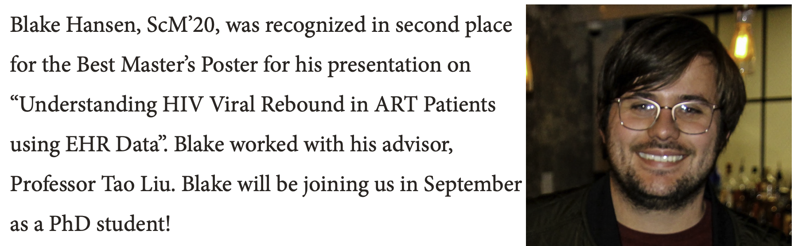
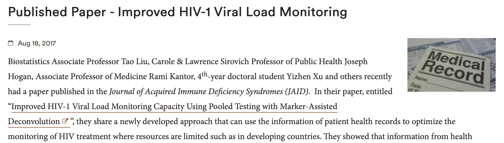

News
Kexin Qu accepted for poster presentation at the 3rd Annual Health Data Science Symposium
[October 28, 2021]
The symposium focuses on Personal Data Modeling around
"
Smartphones, Wearables, and Health"
and will take place at Harvard in Boston on Nov 5th, 2021. This is a joint work by Kexin Qu (PhD student),
Dr Chris Schmid, Dr Tao Liu, and the I-STOP trial investigators. Congratulations, Kexin!

Blake Won Public Health Research Poster Award of 2020
[March 23, 2020]
Congratulations to Blake for winning one of the Best Master’s Poster Awards entitled
“
Understanding HIV Viral Rebound in ART Patients using EHR Data”. This is a collaboration project with
Dr Curt Beckwith and the CNICS Network investigators.
Web

Covariate-assisted pooling paper published in JAIDS
[August 23, 2017]
Our work on covariate-assisted quantitative pooling strategies is published
in
JAIDS. The proposed pooling methods have the potential of providing more HIV+ people with
drug resistance mutation monitoring while reducing clinical cost. The method is being verified in
real clinical settings. Congratulations to all.
